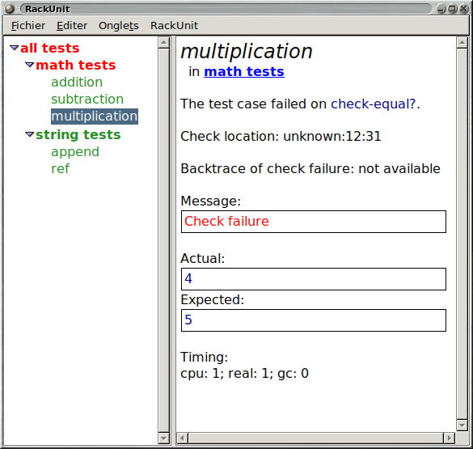

3 RackUnit API
| (require rackunit) | package: rackunit-lib |
3.1 RackUnit 概述
RackUnit 有三个基本概念:
check 是测试的基本单元。顾名思义,它检查某些条件是否为真。
test case 是一组检查,形成一个概念单元。如果案例中的任何检查失败,整个案例都会失败。
test suite 是一组有名称的测试用例和测试套件。
3.2 检查
检查是 RackUnit 的基本构建单元。 一个检查检查一些条件,并且总是评估为 (void) 。 如果条件不成立,检查将使用当前的 check-info stack 报告失败 (参见 current-check-handler 来定制失败的处理方式)。
尽管检查是以宏的形式实现的,这对于抓取源位置是必要的(参见 自定义检查), 但它们在概念上是函数(下面的 check-match 除外)。 这意味着,例如,检查总是评估其参数。你可以把检查作为第一类函数,尽管这将影响检查所抓取的源位置。
3.2.1 基本检查
以下是 RackUnit 提供的基本检查。 你可以使用 define-check 创建你自己的检查。
procedure
v1 : any/c v2 : any/c message : (or/c string? #f) = #f (check-not-eq? v1 v2 [message]) → void? v1 : any/c v2 : any/c message : (or/c string? #f) = #f (check-eqv? v1 v2 [message]) → void? v1 : any/c v2 : any/c message : (or/c string? #f) = #f (check-not-eqv? v1 v2 [message]) → void? v1 : any/c v2 : any/c message : (or/c string? #f) = #f (check-equal? v1 v2 [message]) → void? v1 : any/c v2 : any/c message : (or/c string? #f) = #f (check-not-equal? v1 v2 [message]) → void? v1 : any/c v2 : any/c message : (or/c string? #f) = #f
例如,下面的检查都会失败:
> (check-eq? (list 1) (list 1) "allocated data not eq?")
--------------------
FAILURE
name: check-eq?
location: eval:3:0
message: "allocated data not eq?"
actual: '(1)
expected: '(1)
--------------------
> (check-not-eq? 1 1 "fixnums are eq?")
--------------------
FAILURE
name: check-not-eq?
location: eval:4:0
params: '(1 1)
message: "fixnums are eq?"
--------------------
> (check-eqv? 1 1.0 "not eqv?")
--------------------
FAILURE
name: check-eqv?
location: eval:5:0
message: "not eqv?"
actual: 1
expected: 1.0
--------------------
> (check-not-eqv? 1 1 "integers are eqv?")
--------------------
FAILURE
name: check-not-eqv?
location: eval:6:0
params: '(1 1)
message: "integers are eqv?"
--------------------
> (check-equal? 1 1.0 "not equal?")
--------------------
FAILURE
name: check-equal?
location: eval:7:0
message: "not equal?"
actual: 1
expected: 1.0
--------------------
> (check-not-equal? (list 1) (list 1) "equal?")
--------------------
FAILURE
name: check-not-equal?
location: eval:8:0
params: '((1) (1))
message: "equal?"
--------------------
procedure
(check-pred pred v [message]) → void?
pred : (-> any/c any/c) v : any/c message : (or/c string? #f) = #f
> (check-pred string? "I work")
> (check-pred number? "I fail")
--------------------
FAILURE
name: check-pred
location: eval:10:0
params: '(#<procedure:number?> "I fail")
--------------------
例如,下面的检查通过:
> (check-= 1.0 1.01 0.02 "I work")
> (check-= 1.0 1.01 0.005 "I fail")
--------------------
FAILURE
name: check-=
location: eval:12:0
params: '(1.0 1.01 0.005)
message: "I fail"
--------------------
procedure
(check-within v1 v2 epsilon [message]) → void?
v1 : any/c v2 : any/c epsilon : number? message : (or/c string? #f) = #f
例如,以下检查通过:
> (check-within (list 6 10) (list 6.02 9.99) 0.05) > (check-within (flvector 3.0 4.0 5.0) (flvector 3.01 4.01 5.014) 0.02) > (check-within (hash 'C 20 'F 68) (hash 'C 25 'F 77) 10)
> (check-within (list 6e+23 10.0) (list 6.02e+23 9.8) 0.05)
--------------------
FAILURE
name: check-within
location: eval:16:0
actual: '(6e+23 10.0)
expected: '(6.02e+23 9.8)
--------------------
> (check-within (hash 'C 18 'F 64) (hash 'C 25 'F 77) 10)
--------------------
FAILURE
name: check-within
location: eval:17:0
actual: '#hash((C . 18) (F . 64))
expected: '#hash((C . 25) (F . 77))
--------------------
Added in version 1.10 of package rackunit-lib.
procedure
(check-true v [message]) → void?
v : any/c message : (or/c string? #f) = #f (check-false v [message]) → void? v : any/c message : (or/c string? #f) = #f (check-not-false v [message]) → void? v : any/c message : (or/c string? #f) = #f
例如,下面这些检查都失败了:
> (check-true 1)
--------------------
FAILURE
name: check-true
location: eval:18:0
params: '(1)
--------------------
> (check-false 1)
--------------------
FAILURE
name: check-false
location: eval:19:0
params: '(1)
--------------------
> (check-not-false #f)
--------------------
FAILURE
name: check-not-false
location: eval:20:0
params: '(#f)
--------------------
procedure
exn-predicate : (or/c (-> any/c any/c) regexp?) thunk : (-> any) message : (or/c string? #f) = #f
例如,下面的检查成功:
> (check-exn exn:fail? (lambda () (raise (make-exn:fail "Hi there" (current-continuation-marks)))))
> (check-exn exn:fail? (lambda () (error 'hi "there")))
下面的检查失败:
> (check-exn exn:fail? (lambda () (break-thread (current-thread))))
--------------------
ERROR
name: check-exn
location: eval:23:0
params: '(#<procedure:exn:fail?> #<procedure>)
user break
--------------------
下面的例子是一个常见的错误。 对 error 的调用不在 lambda 之内,所以它完全绕过了 check-exn 。
; Forgot to wrap the expression in a thunk. Don't do this!
> (check-exn exn:fail? (error 'hi "there"))
--------------------
ERROR
name: check-exn
location: eval:24:0
hi: there
--------------------
> (check-not-exn (λ () 1)) > (check-not-exn (λ () (car '())))
--------------------
FAILURE
name: check-not-exn
location: eval:26:0
params: '(#<procedure>)
message: "Exception raised"
exception-message: "car: contract violation\n expected: pair?\n given: '()"
exception:
car: contract violation
expected: pair?
given: '()
--------------------
> (check-not-exn (λ () (/ 1 0)) "don't divide by 0")
--------------------
FAILURE
name: check-not-exn
location: eval:27:0
params: '(#<procedure>)
message: "don't divide by 0"
exception-message: "/: division by zero"
exception:
/: division by zero
--------------------
procedure
(check-regexp-match regexp string) → void?
regexp : regexp? string : string?
例如,下面的检查是成功的:
> (check-regexp-match "a+bba" "aaaaaabba")
下面的检查失败:
> (check-regexp-match "a+bba" "aaaabbba")
--------------------
FAILURE
name: check-regexp-match
location: eval:29:0
params: '("a+bba" "aaaabbba")
--------------------
syntax
(check-match v pattern)
(check-match v pattern pred)
> (check-match (list 1 2 3) (list _ _ 3))
此检查不匹配:
> (check-match (list 1 2 3) (list _ _ 4))
--------------------
FAILURE
name: check-match
location: eval:31:0
actual: '(1 2 3)
expected: '(list _ _ 4)
--------------------
如果提供了 pred ,那么它将与来自匹配模式的绑定进行评估。 如果它产生 #t, 整个检查就成功了,否则就失败。 例如,这个用法成功,在谓词中绑定 x :
> (check-match (list 1 (list 3)) (list x (list _)) (odd? x))
这个检查失败是因为 pred 失败了:
> (check-match 6 x (odd? x))
--------------------
FAILURE
name: check-match
location: eval:33:0
actual: 6
expected: 'x
--------------------
由于匹配失败,此检查失败:
> (check-match (list 1 2) (list x) (odd? x))
--------------------
FAILURE
name: check-match
location: eval:34:0
actual: '(1 2)
expected: '(list x)
--------------------
例如,下面的检查是成功的:
> (check < 2 3)
以下检查不通过:
> (check memq 'pine '(apple orange pear))
--------------------
FAILURE
name: check
location: eval:36:0
params: '(#<procedure:memq> pine (apple orange pear))
--------------------
3.2.2 增强检查失败信息
当一个检查失败时,它可能会将失败的 information 添加到 RackUnit 的 check-info stack 中。 附加信息可以通过使用 with-check-info* 函数和 with-check-info 宏来存储。
struct
(struct check-info (name value) #:extra-constructor-name make-check-info #:transparent) name : symbol? value : any/c
Changed in version 1.6 of package rackunit-lib: 从不透明变为透明
struct
(struct string-info (value) #:transparent) value : string?
> (define-check (string-info-check) (with-check-info (['value "hello world"] ['message (string-info "hello world")]) (fail-check))) > (string-info-check)
--------------------
FAILURE
name: string-info-check
location: eval:38:0
params: '()
value: "hello world"
message: hello world
--------------------
Added in version 1.2 of package rackunit-lib.
struct
(struct nested-info (values) #:transparent) values : (listof check-info?)
> (define-check (nested-info-check) (define infos (list (make-check-info 'foo "foo") (make-check-info 'bar "bar"))) (with-check-info (['nested (nested-info infos)]) (fail-check))) > (nested-info-check)
--------------------
FAILURE
name: nested-info-check
location: eval:40:0
params: '()
nested:
foo: "foo"
bar: "bar"
--------------------
Added in version 1.7 of package rackunit-lib.
struct
(struct dynamic-info (proc) #:transparent) proc : (-> any/c)
> (with-check-info (['current-dir (dynamic-info current-directory)]) (check-equal? 1 2) (parameterize ([current-directory (find-system-path 'temp-dir)]) (check-equal? 1 2)))
--------------------
FAILURE
current-dir:
#<path:/home/ice/racket-8.9-2023-07-14/share/pkgs/rackunit-doc/rackunit/>
name: check-equal?
location: eval:41:0
actual: 1
expected: 2
--------------------
--------------------
FAILURE
current-dir: #<path:/var/tmp/>
name: check-equal?
location: eval:41:0
actual: 1
expected: 2
--------------------
proc 返回的值本身可能是一个特殊的格式化值, 如 nested-info (甚至是另一个 dynamic-info), 在这种情况下,该值会按照没有被 dynamic-info 包装的情况来呈现。
> (define current-foo (make-parameter #f))
> (with-check-info (['foo (dynamic-info current-foo)]) (check-equal? 1 2) (parameterize ([current-foo (nested-info (list (make-check-info 'nested 'foo)))]) (check-equal? 1 2)))
--------------------
FAILURE
foo: #f
name: check-equal?
location: eval:43:0
actual: 1
expected: 2
--------------------
--------------------
FAILURE
foo:
nested: foo
name: check-equal?
location: eval:43:0
actual: 1
expected: 2
--------------------
Added in version 1.9 of package rackunit-lib.
有几个预定义的函数可以创建具有预定义名称的 check-info 结构。 这就避免了拼写错误:
procedure
(make-check-name name) → check-info?
name : string? (make-check-params params) → check-info? params : (listof any/c) (make-check-location loc) → check-info?
loc :
(list/c any/c (or/c number? #f) (or/c number? #f) (or/c number? #f) (or/c number? #f)) (make-check-expression msg) → check-info? msg : any/c (make-check-message msg) → check-info? msg : string? (make-check-actual param) → check-info? param : any/c (make-check-expected param) → check-info? param : any/c
procedure
(with-check-info* info thunk) → any
info : (listof check-info?) thunk : (-> any)
> (with-check-info* (list (make-check-info 'time (current-seconds))) (lambda () (check = 1 2)))
--------------------
FAILURE
time: 1689367065
name: check
location: eval:44:0
params: '(#<procedure:=> 1 2)
--------------------
当这个检查失败时,信息
time: <current-seconds-at-time-of-running-check> |
会被打印出来,并与检查失败的一般信息一起。
syntax
(with-check-info ((name val) ...) body ...)
> (for-each (lambda (elt) (with-check-info (('current-element elt)) (check-pred odd? elt))) (list 1 3 5 7 8))
--------------------
FAILURE
current-element: 8
name: check-pred
location: eval:45:0
params: '(#<procedure:odd?> 8)
--------------------
当这个检查失败时,信息
current-element: 8 |
会被打印出来,并与检查失败的一般信息一起。
procedure
(with-default-check-info* info thunk) → any
info : (listof check-info?) thunk : (-> any)
> (with-default-check-info* (list (make-check-name 'first-name)) (λ () (with-default-check-info* (list (make-check-name 'last-name)) (λ () (check-true #false)))))
--------------------
FAILURE
name: first-name
location: eval:46:0
params: '(#f)
--------------------
上面的错误信息应该包括 'first-name 而不是 'last-name 。
3.2.3 自定义检查
自定义检查可以用 define-check 和它的变体来定义。 为了有效地使用这些宏,了解关于检查的评估模型的一些细节是很有用的。
首先,检查应该被认为是一个函数,尽管大多数使用的是宏。 特别是,在执行检查主体中的任何表达式之前,检查总是精确地评估其参数一次。 因此,如果你想写检查来评估用户定义的代码,该代码必须被用户包裹在 thunk(一个没有参数的函数)中。 预定义的 check-exn 就是这种类型的检查的一个例子。
第二,检查将信息添加到 check-info stack: RackUnit 解释的 check-info 结构的内部列表,以建立错误信息。 basic checks 将堆栈视为可选参数的来源; 如果堆栈缺少一些信息,那么检查可以提供一个默认值。 例如,如果 check-info stack 不包含名称为 'location 的 check-info (见 make-check-location), 则 check-equal? 会添加一个默认的源位置。
syntax
(define-simple-check (name param ...) body ...)
简单的检查不能通过在其 body 内使用 with-check-info 来报告额外的信息。
例如,下面的代码定义了一个检查 check-odd?
> (define-simple-check (check-odd? number) (odd? number))
我们可以用通常的方法来使用这些检查:
> (check-odd? 3) > (check-odd? 2)
--------------------
FAILURE
name: check-odd?
location: eval:49:0
params: '(2)
--------------------
syntax
(define-binary-check (name pred actual expected))
(define-binary-check (name actual expected) body ...)
这里是第一种形式,我们使用一个预定义的谓词来构造一个二进制检查:
> (define-binary-check (check-char=? char=? actual expected))
在使用:
> (check-char=? (read-char (open-input-string "a")) #\a)
如果表达式比较复杂,应该使用第二种形式。 例如,下面我们定义一个二进制检查,测试一个数字是否在预期值的 0.01 以内:
> (define-binary-check (check-in-tolerance actual expected) (< (abs (- actual expected)) 0.01))
syntax
(define-check (name param ...) body ...)
> (define-check (check-even? number) (unless (even? number) (fail-check))) > (check-even? 0) > (check-even? 1)
--------------------
FAILURE
name: check-even?
location: eval:55:0
params: '(1)
--------------------
用 define-check 定义的检查会在 check-info stack 中添加其使用地点的源位置和源语法, 除非该栈已经包含了 'location 和 'expression 的键值。
> (check-equal? 0 1)
--------------------
FAILURE
name: check-equal?
location: eval:56:0
actual: 0
expected: 1
--------------------
> (with-check-info* (list (make-check-location (list 'custom 6 1 #f #f))) (λ () (check-equal? 0 1)))
--------------------
FAILURE
location: custom:6:1
name: check-equal?
actual: 0
expected: 1
--------------------
Changed in version 1.9 of package rackunit-lib: 记录了添加 'location 和 'expression 信息的协议。
procedure
(fail-check message) → void?
message : string?
3.3 复合测试形式
3.3.1 测试用例
随着程序复杂性的增加,测试单元的增长超过了单一的检查。 例如,可能出现的情况是,如果一个检查失败了,再运行另一个检查就没有意义了。 为了解决这个问题,可以使用复合测试形式对表达式进行分组。 如果一组中的任何表达式失败(通过引发异常),其余的表达式将不会被评估。
syntax
(test-begin expr ...)
例如,在下面的代码中,由于前面的检查失败,世界并没有被摧毁:
(test-begin (check-eq? 'a 'b) ; This line won't be run (destroy-the-world))
syntax
(test-case name body ...+)
下面是上面的例子改写成使用 test-case ,所以测试可以被命名。
(test-case "Example test" (check-eq? 'a 'b) ; This line won't be run (destroy-the-world))
procedure
(test-case? obj) → boolean?
obj : any/c
3.3.1.1 定义测试用例的快捷方式
procedure
(test-check name operator v1 v2) → void?
name : string? operator : (-> any/c any/c any/c) v1 : any/c v2 : any/c (test-pred name pred v) → void? name : string? pred : (-> any/c any/c) v : any/c (test-equal? name v1 v2) → (void?) name : string? v1 : any/c v2 : any/c (test-eq? name v1 v2) → void? name : string? v1 : any/c v2 : any/c (test-eqv? name v1 v2) → void? name : string? v1 : any/c v2 : any/c (test-= name v1 v2 epsilon) → void? name : string? v1 : real? v2 : real? epsilon : real? (test-true name v) → void? name : string? v : any/c (test-false name v) → void? name : string? v : any/c (test-not-false name v) → void? name : string? v : any/c (test-exn name pred thunk) → void? name : string? pred : (or/c (-> any/c any/c) regexp?) thunk : (-> any) (test-not-exn name thunk) → void? name : string? thunk : (-> any)
(test-equal? "Fruit test" "apple" "pear")
(test-case "Fruit test" (check-equal? "apple" "pear"))
3.3.2 测试套件
测试用例本身可以被分组为测试套件。 一个测试套件可以同时包含测试用例和测试套件。 与检查或测试用例不同,测试套件不会被立即运行。 而是使用 用户界面 或 程序化运行测试和检查结果 中描述的一个函数。
syntax
(test-suite name-expr maybe-before maybe-after test ...)
maybe-before =
| #:before before-thunk maybe-after =
| #:after after-thunk
name-expr : string?
before-thunk 和 after-thunk 是可选的 thunks(没有参数的函数)。 它们分别在测试运行之前和之后运行。
与检查或测试案例不同,测试套件不会立即运行。 而是使用 用户界面 或 程序化运行测试和检查结果 中描述的一个函数。
例如,这里是一个测试套件,在任何测试运行前显示 Before ,在测试完成后显示 After 。
(test-suite "An example suite" #:before (lambda () (display "Before")) #:after (lambda () (display "After")) (test-case "An example test" (check-eq? 1 1)) (test-suite "A nested test suite" (test-case "Another test" (check < 1 2))))
procedure
(make-test-suite name tests [ #:before before-thunk #:after after-thunk]) → test-suite? name : string? tests : (listof (or/c test-case? test-suite?)) before-thunk : (-> any) = void after-thunk : (-> any) = void
procedure
(test-suite? obj) → boolean?
obj : any/c
3.3.2.1 定义测试套件的实用程序
有一些宏,简化了定义测试套件的常见情况:
syntax
(define-test-suite name test ...)
例如,这段代码为 example-suite 这个名字创建了一个绑定, 同时也创建了一个名字为 "example-suite" 的测试套件:
(define-test-suite example-suite (check = 1 1))
syntax
(define/provide-test-suite name test ...)
3.4 测试控制流
before, after 和 around 宏允许你指定代码, 总是在测试用例中表达式之前、之后或周围运行。
syntax
(before before-expr expr-1 expr-2 ...)
syntax
(after expr-1 expr-2 ... after-expr)
syntax
(around before-expr expr-1 expr-2 ... after-expr)
例子:
下面的测试检查文件 test.dat 是否包含字符串 "foo" 。 before 动作写到这个文件。之后的动作将其删除。
(around (with-output-to-file "test.dat" (lambda () (write "foo"))) (with-input-from-file "test.dat" (lambda () (check-equal? "foo" (read)))) (delete-file "test.dat"))
syntax
(delay-test test1 test2 ...)
3.5 其它实用程序
require/expose 宏允许你访问一个模块没有提供的绑定。 它对于测试模块的私有功能很有用。
syntax
(require/expose module (id ...))
请注意, require/expose 可能有点脆弱,特别是在与编译后的代码混合时。 使用时请自行承担风险!
这个例子得到了 make-failure-test, 它被定义在 RackUnit 测试中:
(require/expose rackunit/private/check-test (make-failure-test))
procedure
(dynamic-require/expose mod name) → any
mod :
(or/c module-path? module-path-index? resolved-module-path?) name : symbol?
用 define-check 定义的检查提供了一个编译时 API 来访问与检查相关的信息。
procedure
(check-transformer? v) → boolean?
v : any/c
在第一阶段由 rackunit 提供。
procedure
ct : check-transformer?
由 rackunit 在第一阶段提供。
3.6 用户界面
RackUnit 提供了一个文本和一个图形的用户界面
3.6.1 文本用户界面
| (require rackunit/text-ui) | package: rackunit-lib |
文本用户界面在 rackunit/text-ui 模块中。它通过 run-tests 函数运行。
procedure
(run-tests test [verbosity]) → natural-number/c
test : (or/c test-case? test-suite?) verbosity : (symbols 'quiet 'normal 'verbose) = 'normal
可选的 verbosity 是 'quiet, 'normal 或 'verbose 之一。 安静的输出只显示成功、失败和错误的数量。 正常报告抑制了一些无关的检查信息(比如表达式)。Verbose 报告所有信息。
run-tests 返回不成功的测试的数量。
3.6.2 图形用户界面
| (require rackunit/gui) | package: rackunit-gui |
还提供了一个GUI测试运行器,可从 rackunit/gui 模块获得。
procedure
test : (or/c test-case? test-suite?) wait? : boolean? = #f
当 wait? 为真时, test/gui 不会返回,直到测试运行器窗口被关闭。
给出以下程序,RackUnit GUI 将如下所示:
#lang racket (require rackunit rackunit/gui) (test/gui (test-suite "all tests" (test-suite "math tests" (test-case "addition" (check-equal? (+ 1 1) 2)) (test-case "subtraction" (check-equal? (- 0 0) 0)) (test-case "multiplication" (check-equal? (* 2 2) 5))) (test-suite "string tests" (test-case "append" (check-equal? (string-append "a" "b") "ab")) (test-case "ref" (check-equal? (string-ref "abc" 1) #\b)))))

procedure
(make-gui-runner) → (-> (or/c test-case? test-suite?) ... any)